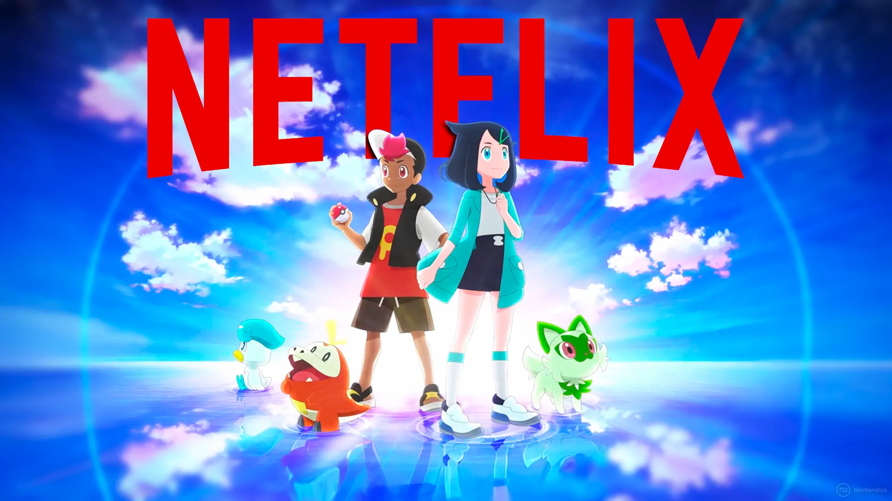

Pokémon Horizontes | A temporada mais importante do anime chega à Netflix
por André Mello - 02/03/2024
Depois de mais de 25 anos acompanhando Ash e Pikachu, finalmente chegou a hora de dar adeus a esses personagens. O anime Pokémon Horizontes: A Série chega à Netflix nesta quinta-feira (07) como um dos capítulos mais importantes de toda a franquia de monstrinhos da Nintendo — afinal, trata-se da primeira que não será protagonizada pela dupla que marcou gerações. Para marcar um novo momento na saga, temos novos protagonistas e a tentativa de atrair novatos e veteranos.
O novo anime começou a ser exibido no Japão em 2023, estreando na carona dos jogos Pokémon Scarlet e Violet. Contudo, o que realmente chamou a atenção do mundo inteiro foi o fato de, pela primeira vez, Pikachu não ser mais o protagonista dessa história, dando lugar a outros monstrinhos e a personagens que o público iria conhecer a partir daquele momento.
O motivo da troca é bastante óbvio. Depois de exatos 26 anos acompanhando a dupla principal, a The Pokémon Company entendeu que manter o jovem treinador da cidade de Pallet que sonha em se tornar um mestre Pokémon era algo que afastava o público. Afinal, eram dezenas de temporadas com ele, dando a impressão tanto de que se tratava de uma história muito enrolada como uma aventura que afastava novos espectadores.
Assim, ao renovar o elenco, Pokémon Horizontes: A Série cria o cenário perfeito para atrair tanto quem cresceu assistindo o anime no passado como também para quem está chegando agora. Seja pela curiosidade de ver o tom das novas tramas ou pela possibilidade de conferir algo completamente novo, a animação já chega com uma importância que há tempos não se via nos monstrinhos de bolso.
O que aconteceu com Ash e Pikachu?
A história de Ash Ketchum e Pikachu, lutando contra tudo e todos para se tornar o Mestre Pokémon supremo durou 26 anos, fazendo de Ash a criança com mais experiência do mercado de trabalho daquele universo.
Em um episódio emocionante, tudo acabou e Ash venceu a Liga Pokémon, finalmente se tornando um campeão. Sua jornada chegou ao fim, crianças e adultos assistiram ao episódio com lágrimas nos olhos quando todos os monstros que lutaram ao lado de Ash e Pikachu apareceram para torcer por eles. Até o Squirtle malandro de óculos escuros estava ali!
Após se sagrar campeão, Ash continuou em sua jornada ao lado de seu Pikachu. A última cena do anime clássico não tem um clímax como muitos esperavam e traz a dupla pegando a estrada mais uma vez em busca de mais aventuras. Para o herói, é apenas mais uma viagem em busca de ser o melhor — embora, para nós, suas palavras sejam carregadas de uma nostalgia imensa. É assim que sua história acaba e que começa Pokémon Horizontes.
Sobre o que se trata Pokémon Horizontes?
A nova série dos monstrinhos de bolso deixa para trás a história de Ash Ketchum e traz dois novos protagonistas, Liko e Rain, na companhia dos Pokémon Sprigatito e Fuecoco, monstros iniciais da nona geração de games.
De acordo com a sinopse oficial do desenho, Liko tem um pingente misterioso que acaba atraindo a atenção dos Desbravadores, um grupo que quer o objeto a todo custo. Já Rain, assim como Ash, quer se tornar um treinador famoso, sem ter a menor noção que, entre seus pertences, está uma Poké Bola Ancestral com um grande segredo.
Além da dupla, outros personagens devem fazer parte dos episódios, como o Professor Pokémon Friede e seu companheiro Capitão Pikachu, porque obviamente iam enfiar outro Pikachu na série.
A nova série é extremamente importante por apresentar um novo começo para a animação dos monstrinhos da Nintendo, depois de 25 anos de carteira assinada do jovem Ash Ketchum como protagonista. Todo esse peso agora será carregado por Liko e Rain, embora os mistérios em torno deles indiquem que devemos ter um ciclo menor do que o de seu antecessor.